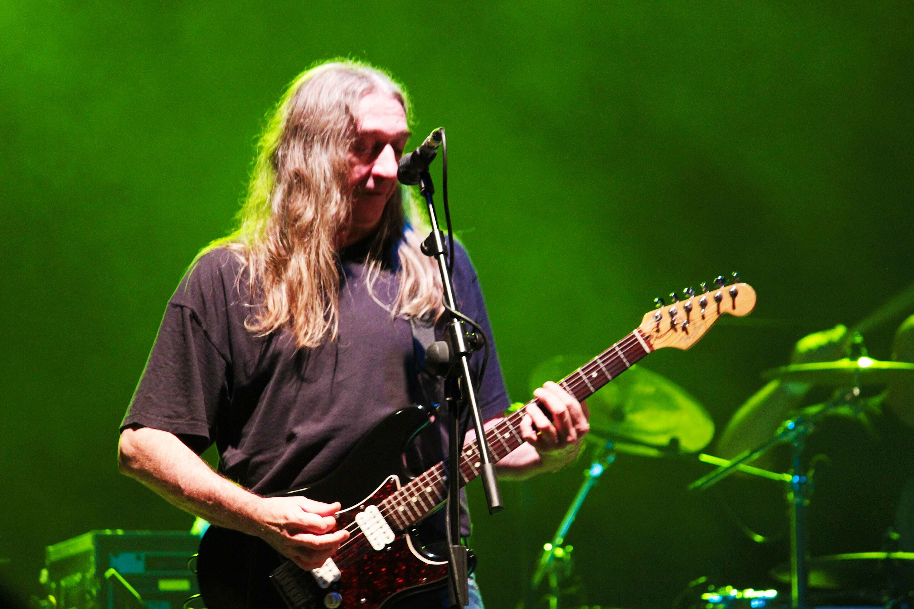
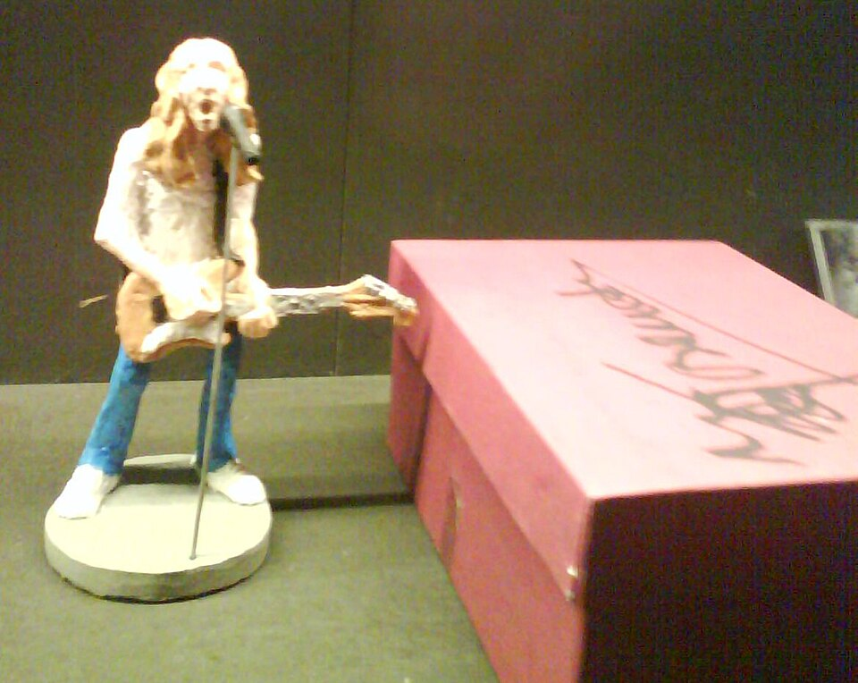

Frase icónica
“La música es de quien la escucha.” — Rosendo
Rosendo Mercado
El alma del rock urbano español.
Rosendo Mercado Ruiz nació en Madrid en 1954. Rosendo Mercado Ruiz, más conocido simplemente como Rosendo, es un guitarrista, cantante y compositor español de rock. Formó parte de los grupos Ñu y Leño, y es considerado uno de los más importantes representantes del rock español.
Con Leño obtuvo sus primeros reconocimientos donde comenzó tocando un rock influido por varias bandas de los años 1970 de hard rock y blues rock aunque también dejándose influir por las nuevaoleras de los años 1980.
Durante sus primeros trabajos discográficos en solitario de los ochenta, prosiguió con el estilo más clásico «rocanrolero» pero sin renunciar al uso de teclados.Con el tiempo, y tras desarrollar ampliamente su carrera en solitario así como dejar de lado el uso de teclados, acabó por ser calificado de «rockautor» por la importancia que le daba a los textos sobre la música, y su estilo de rock duro a mediotiempo centrado en sus riffs y líneas vocales.
A nivel de crítica, algunas de sus obras más citadas por el periodismo musical han sido Leño (1979),Más madera (1980), Corre, corre (1982),Loco por incordiar(1985),Jugar al guaJugar al gua (1988)o Para mal o para bien (1994).
Con su estilo directo, su guitarra Fender y una honestidad sin adornos, Rosendo se convirtió en referente generacional. En 1985 lanzó Loco por incordiar, su primer disco en solitario, que contenía himnos como “Agradecido”.

Prefiero sonar mal en directo que perfecto sin tocar.

Rosendo ha publicado más de una docena de álbumes de estudio. Sus primeros cuatro —Loco por incordiar, Fuera de lugar, ... A las lombrices y Jugar al gua— definen su época dorada (1985–1988).
Rosendo Mercado realizó una gira de despedida llamada "Mi tiempo señorías" en 2018, con la que puso fin a las giras musicales tras casi 45 años de carrera en la carretera. La gira se anunció a principios de marzo de 2018 y se celebró a finales de año, terminando en Barcelona el 22 de diciembre.
“La música es de quien la escucha.” — Rosendo